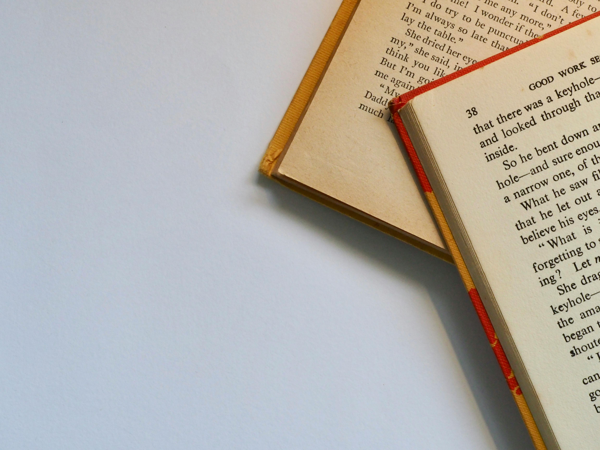

Books are the quietest and most constant of friends; they are the most accessible and wisest of counselors, and the most patient of teachers

We’re born alone, we live alone, we die alone. Only through our love and friendship can we create the illusion for the moment that we’re not alone
Flowers don’t worry about how they’re going to bloom. They just open up and turn toward the light and that makes them beautiful